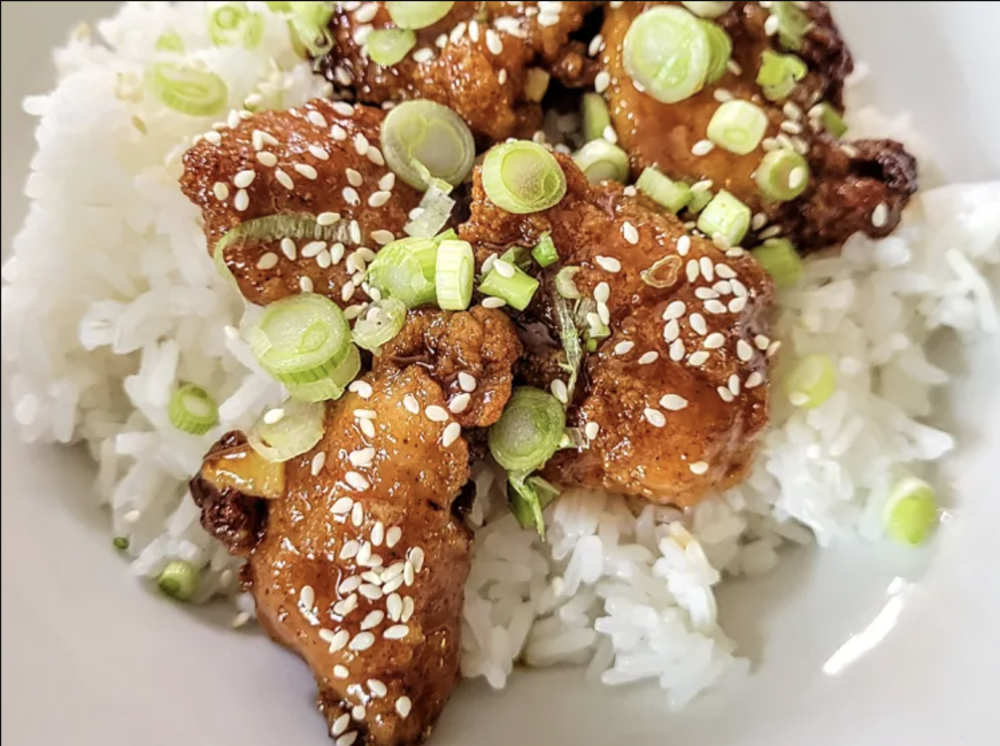

Home
Orange Chicken

This 4-ingredient orange chicken made with frozen chicken tenders is great for when you’re
craving takeout. It’s so simple to make at home, is very budget-friendly, and only takes 4
ingredients. I serve it over rice, topped with green onions and sesame seeds.
Ingredients
- 1 cup orange marmalade
- 1/2 cup Kansas City-style BBQ sauce
- 1/4 cup low sodium soy sauce
- 1 (1 pound) bag frozen fully cooked chicken nuggets
- sliced green onions (optional)
- sesame seeds (optional)
Steps
-
Preheat the oven to 400 degrees F (200 degrees C). Place frozen nuggets in a single layer on
a baking sheet.
-
Bake in the preheated oven until hot and crispy, 11 to 13 minutes, or according to package
directions.
-
Meanwhile, whisk marmalade, BBQ sauce, and soy sauce together in a small saucepan and heat
over low heat until hot, about 5 minutes.
- Place nuggets in a large bowl. Drizzle sauce over the top. Toss to coat.